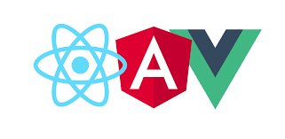

AngularJS源代码阅读(1) angularjs 沉思¶

前言¶
由于团队前后端分离选型比较早，工作中一直使用Angularjs进行web前端开发。在Angularjs一出来的时代，是红极一时的明星框架。他开创了前端一个新的时代。对比团队在之前使用Jquery+Bootstrap的年代时候的开发技术，Angularjs让团队的开发效率大大提高。
在Angularjs极盛一时的年代，对于SPA(single page application)首选的框架就是angularjs。当你还在写JQuery的时候，为各种dom操作苦恼的时候，Angularjs的helloworld例子会让你眼前一亮。紧接着，双向数据绑定、视图和数据模型自动更新、依赖注入、服务化以及最让人心动的指令（directive）都让人怦然心动，重新认识前端开发。
时代浪潮¶
今天，是2018年3月17日。从angularjs开发到现在已经8年多了。在这期间，特别是最近，前端界的发展可谓是汹涌澎湃、日新月异。目前我们日常听到的框架有以下几个:

- React
- Vue
- Anuglar
对于这些框架的评价，在社区中有很多各种各样的说法。也有不少商业互喷的，张口就说抄袭我的之类的。而对于angularjs这个框架，则是一个饱受人们诟病的、被批评最多的以及“被抛弃”的前端框架。
偏见¶
接触过一些前端的从业者、或者是社区人员包括我自身在内，对于angularjs这个框架都存在不少的差评。当工作的项目组提供重构想法的时候，我首先提出了强烈地替换框架的想法。甚至乎连Google大佬，都直接放弃了他的“先天不足”的angularjs儿子，转而生了一个“更有才华”的“二胎”——angular2+。虽然官方在迁移框架上花了很大的心思，但是也不能弥补“生态”的破坏和旧框架使用者的痛苦。
在看到别的大佬们都开始写vue，并且拥有先进的前端开发工具、具备超级爽的开发体验之后，感觉非常落寞，无缘于这个精彩的前端发展时代。
我的偏见：回答，选择使用哪个前端框架是否重要？¶
经过仔细思考，我的回答：重要！非常重要！不可否认的重要！
我反对继续在团队推广使用angularjs（angular 1.x）的主要原因：
- 生态系统：
- 先进的UI框架（比如antd）、技术对angularjs的支持程度远不及angular2、react、vue的程度，或者直接就不支持angularjs。难以整合先进技术。
- 社区：我们甚至没有很便捷的办法，使用开源社区提供的ant design组件。angularjs出现新的问题，或者发现bug，修复的速度会越来越慢，且google把大部分angularjs开发全部都调走去开发angular。新版本，届时angularjs将进入为期4年的LTS。LTS结束之后，意味着angularjs的真正过时。大家都去搞angular2，vue，react了，angular的大佬一直邀请（催促）我们大家，赶紧上angular2的车。
-
人员：
- 对于前端团队：AngularJS 的流行度，是否能保证我们能足够容易地招到会 AngularJS 的人，愿意写angularjs的人？
- 对于非前端专业团队，但是需要进行前端开发的：angularjs复杂的、over-engineered的概念是否能够让大部分人员迅速投入到前端开发（还要考虑不断新来的人员），并且满足产品的大部分需求？
-
框架自身缺陷：
- 谷歌的抛弃：虽然目前angularjs（angular 1.x）仍然有在维护，主要是bug修复。如果angularjs（angular 1.x）不是有严重缺陷，google的开发人员不会毫不留情的抛弃，将整套框架重写且拒绝向前兼容。我觉得谷歌的angular产品欠了全世界程曾经痴迷追求angular的程序员（比如我 = =）
- 执行效率低下，2000个watcher以上就会出现明显的卡顿
- 不支持SSR
- 假的angular.module, 全都是全局的泡沫，根本没有隔离
- 复杂的，在中小型应用中，根本不需要的概念：
- 组件的隐式引用，在html中使用的组件不需要进行依赖注入或者显式引用
- service、factory、provider 多余的概念，很多时候用不上
- 让新人非常迷惑的 directive里面的controller，link，compile函数
- 与很多新技术的隔阂，导致很难、或者说我们需要做很大努力去引入新技术
- 模块化：最蛋疼的是angularjs自带的angular.module是坑中之王
个人认为，angularjs（angular 1.x）：
- 不应该继续被推广，老系统继续进行维护
- 新项目，如cdn的前端项目使用vue作为开发框架。作为部门前端开发经验比较多的我们，在很大程度上应该某种程度上给予vue的相关支持，并且形成技术规范。
反思¶
我思考的一些问题。
- 套用某大佬的话：一个之前2015用angular写的应用，难道在2018就不能运行？—— 否
- angularjs真的这么差吗？我真的深入了解他吗？
- 我有没有办法通过更加深入了解这个框架，以及其全新的angular2，享受生态系统提供的好处
- 我是否能够无缝引入现代的前端开发技术，比如ES6、webpack等？
- 我能否对angularjs的逻辑、概念做抽象，做到web框架无关？
我认为能在当时做出这个框架，并且火起来，在其中必定有闪耀之处。我们不能带着过分的偏见对待技术的发展。
尤大：我们是站在巨人的肩膀上的 我：angularjs其实是巨人的一部分
为什么要阅读angularjs的源代码？¶
带着上述思考，一方面更加学习代码框架的设计思想实现、另一方面更加了解框架考虑升级
我打算怎么阅读源代码？¶
读懂：从核心概念出发，看实现方式和思想¶
在阅读源代码同时，打开angularjs的api文档，顺便过一下那些复杂的概念。
阅读时候，主要寻找框架核心的东西。
- Scope、Provider等
- angular 是如何启动的
- 双向数据绑定
- 如何编译模板
- 各个常用的directive的实现
感悟：批判式地阅读和反思¶
- 为什么给用户如此多的概念，那些概念是over-engineered的
- 性能问题的根因调查，到底digest是怎么写的
- 设计的接口是否合理
- 创新：思考如何结合实际项目，将老框架的angularjs迁移到新的angular
- 以及其他问题